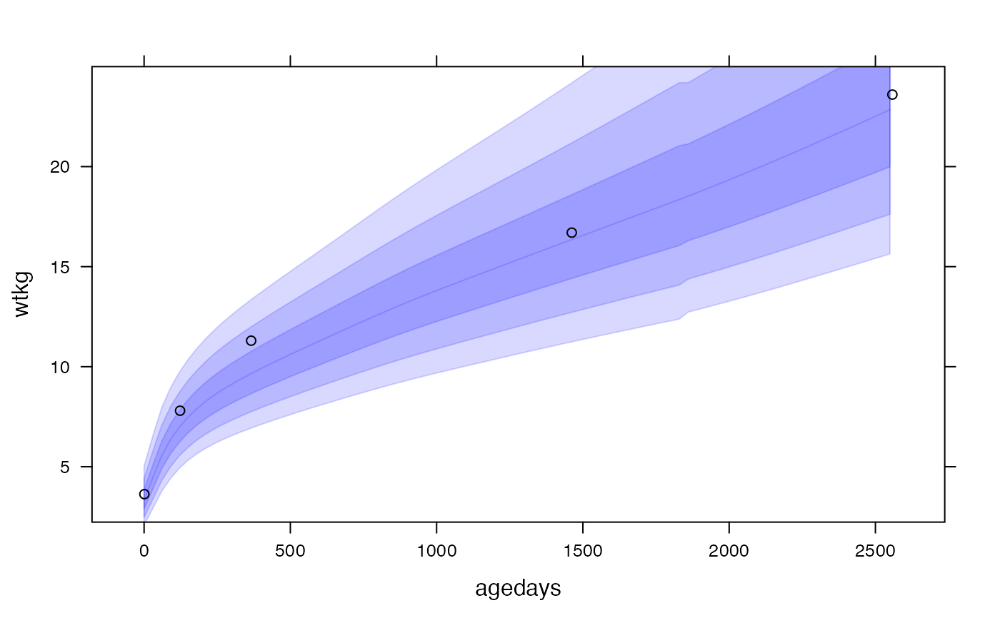
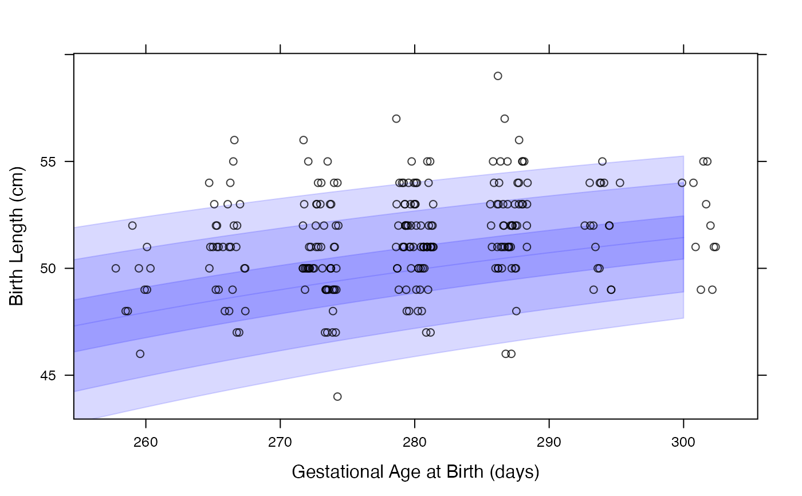

R/plot.R
plot_growth.RdUtility functions for adding growth standard bands to rbokeh/lattice/ggplot2 plots
panel.who(x, x_var = "agedays", y_var = "htcm", sex = "Female", p = c(1, 5, 25, 50), color = NULL, alpha = 0.15, center = FALSE, labels = TRUE, x_trans = identity, y_trans = identity) panel.igb(gagebrth, var = "lencm", sex = "Female", p = c(1, 5, 25, 50), color = NULL, alpha = 0.15, center = FALSE, labels = TRUE, x_trans = identity, y_trans = identity) panel.igfet(gagedays, var = "hccm", p = c(1, 5, 25, 50), color = "green", alpha = 0.15, center = FALSE, labels = TRUE, x_trans = identity, y_trans = identity) geom_growthstandard(mapping = NULL, data = NULL, x_seq, x_var = "agedays", y_var, sex = "Female", p = c(1, 5, 25, 50), shade = NULL, alpha = 0.15, center = FALSE, x_trans = identity, y_trans = identity, standard = "who", inherit.aes = TRUE) geom_who(...) geom_igb(..., var = "lencm") geom_igfet(..., var = "hccm", color = "green") ly_who(fig, x, x_var = "agedays", y_var = "htcm", sex = "Female", p = c(1, 5, 25, 50), color = NULL, alpha = 0.15, center = FALSE, labels = TRUE, x_trans = identity, y_trans = identity, x_units = c("days", "months", "years")) ly_igb(fig, gagebrth, var = "lencm", sex = "Female", p = c(1, 5, 25, 50), color = NULL, alpha = 0.15, center = FALSE, labels = TRUE, x_trans = identity, y_trans = identity) ly_igfet(fig, gagedays, var = "hccm", p = c(1, 5, 25, 50), color = "green", alpha = 0.15, center = FALSE, labels = TRUE, x_trans = identity, y_trans = identity)
| x, x_seq | value or vector of values that correspond to a measure defined by |
|---|---|
| x_var | x variable name (typically "agedays") |
| y_var | y variable name (typically "htcm" or "wtkg") |
| sex | "Male" or "Female" |
| p | centiles at which to draw the growth standard band polygons (only need to specify on one side of the median) |
| color, shade | optional color to use for bands (will use |
| alpha | transparency of the bands |
| center | should the bands be centered around the median? |
| labels | should the centiles be labeled? (not implemented) |
| x_trans | transformation function to be applied to x-axis |
| y_trans | transformation function to be applied to y-axis |
| gagebrth | gestational age at birth in days (for igb plots) |
| var | variable name for y axis for igb or igfet plots ("lencm", "wtkg", or "hcircm" for igb; "accm", "bpdcm", "flcm", "hccm", or "ofdcm" for igfet) |
| gagedays | gestational age in days (for igfet plots) |
| data, mapping, inherit.aes | supplied direclty to |
| standard | standard name to use. Either |
| ... | items supplied direclty to |
| fig | rbokeh figure to add growth standard to |
| x_units | units of age x-axis (days, months, or years) |
# NOT RUN { #### rbokeh library(rbokeh) figure() %>% ly_who(x = seq(0, 2558, by = 30), y_var = "wtkg", x_trans = days2years, sex = "Male") %>% ly_points(days2years(agedays), wtkg, data = subset(cpp, subjid == 8), col = "black", hover = c(agedays, wtkg, lencm, htcm, bmi, geniq, sysbp, diabp)) cpp$wtkg50 <- who_centile2value(cpp$agedays, y_var = "wtkg") figure() %>% ly_who(x = seq(0, 2558, by = 30), y_var = "wtkg", color = "blue", x_trans = days2years, center = TRUE) %>% ly_points(days2years(agedays), wtkg - wtkg50, color = "black", data = subset(cpp, subjid == 8)) # look at Male birth lengths superposed on INTERGROWTH birth standard # first we need just 1 record per subject with subject-level data cppsubj <- subset(cpp, !duplicated(cpp$subjid)) figure(xlab = "Gestational Age at Birth (days)", ylab = "Birth Length (cm)") %>% ly_igb(gagebrth = 250:310, var = "lencm", sex = "Male") %>% ly_points(jitter(gagebrth), birthlen, data = subset(cppsubj, sex == "Male"), color = "black") # plot growth standard bands at z=1, 2, 3 for fetal head circumference figure(xlab = "Gestational Age (days)", ylab = "Head Circumference (cm)") %>% ly_igfet(gagedays = 98:280, var = "hccm", p = pnorm(-3:0) * 100) # }#### lattice library(lattice) xyplot(wtkg ~ agedays, data = subset(cpp, subjid == 8), panel = function(x, y, ...) { panel.who(x = seq(0, 2558, by = 30), sex = "Male", y_var = "wtkg", p = 100 * pnorm(-3:0)) panel.xyplot(x, y, ...) }, col = "black" )# look at Male birth lengths superposed on INTERGROWTH birth standard # first we need just 1 record per subject with subject-level data cppsubj <- subset(cpp, !duplicated(cpp$subjid)) xyplot(birthlen ~ jitter(gagebrth), data = subset(cppsubj, sex == "Male"), panel = function(x, y, ...) { panel.igb(gagebrth = 250:310, var = "lencm", sex = "Male") panel.points(x, y, ...) }, col = "black", alpha = 0.75, xlab = "Gestational Age at Birth (days)", ylab = "Birth Length (cm)" )